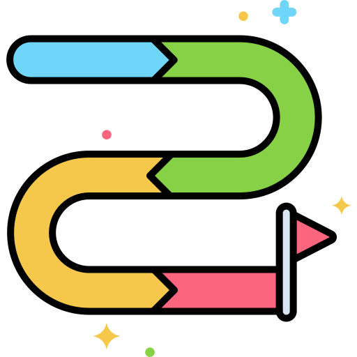

CURRICULUM
| 구분 | 활동계획 | |
| 8월 | on |
<성범죄 예방 UCC> 학교 내 성범죄들이 자기도 모르는 사이 이루어지기 때문에 어떤 부분이 성범죄에 해당하는 학생들에게 경각심을 주는 영상 제작 성범죄를 당했을 때 학생들이 할 수 있는 대응 방안에 대하여 언급하여 학생들을 대상으로 한 UCC 제작. |
| off |
<유아 현장 교육> 어린이집 근처에서 이루어질 수 있는 범죄 현장들을 유아들을 데 리고 다니며 이루어질 수 있는 상황과 대응 방안에 대한 교육을 해줌. 또한, 위험한 장소를 미리 조사하여 혼자 가서는 안되는 곳 이라는 교육을 진행한다. |
|
| 9월 | on |
<폭력 예방 카드뉴스 제작> 폭력 예방을 주제로 네 컷 만화 형식의 카드뉴스를 제작. 학생들에게 익숙한 매체를 이용해 관심을 끌고 홍보효과를 높임. |
| off |
<폭력 예방 퀴즈> 폭력 예방에 대한 OX 퀴즈 계획. 사람들이 알지 못하거나 헷갈리 만한 문제를 준비함. 소정의 상품을 통해 참여를 유도하고, 부연 설명을 덧붙여 홍보함. |
|
| 10월 | on |
<2차 온라인 설문> '범죄 예방 정책 확산 활동'에 필요한 시민들의 정책 인식 정도 및 범죄예방정책국 이해도 확인을 통한 관심 증진. |
| off |
<학교 방문을 통한 CPTED 교육> 환경 설계를 통한 범죄 예방인 CPTED를 교육하고 실습 프로그램으로 학생들과 함께 도시 건축 환경을 검토하고 직접 도시 설계해보기 활동 진행. |
|